1. Introducció
Un SGE (Sistema de Gestió Empresarial) és un programari que centralitza i automatitza els processos d'una empresa (vendes, facturació, comptabilitat, estoc…) en una sola plataforma amb dades compartides. Dins d'aquesta categoria hi trobem l'ERP (gestió integral de recursos), el CRM (relació amb els clients) i el BI (anàlisi de dades).
Hem triat Holded, un ERP al núvol pensat per a pimes que també inclou funcions de CRM. Té l'origen a Barcelona, cosa que el fa més proper i interessant.
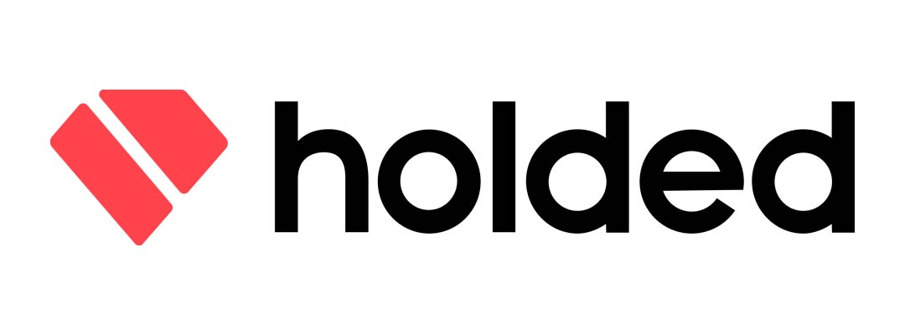
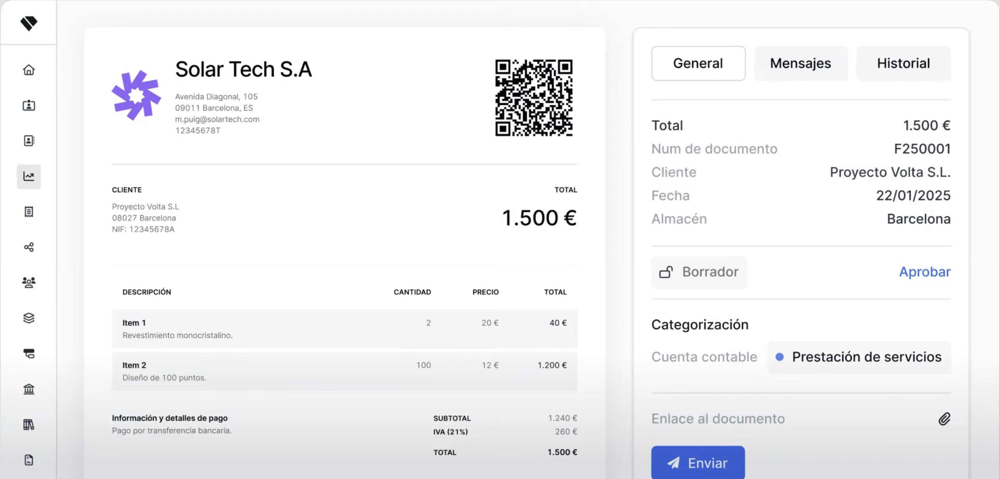
2. Informació general del sistema
2.1 Desenvolupadors i història cronològica
Holded va ser fundada per dues persones:
- Javi Fondevila (Co-CEO): provinent del món dels negocis i el dret.
- Bernat Ripoll (Co-CEO i desenvolupador): snowboarder professional i programador autodidacte, va ser qui va escriure el codi de la primera versió del programari.
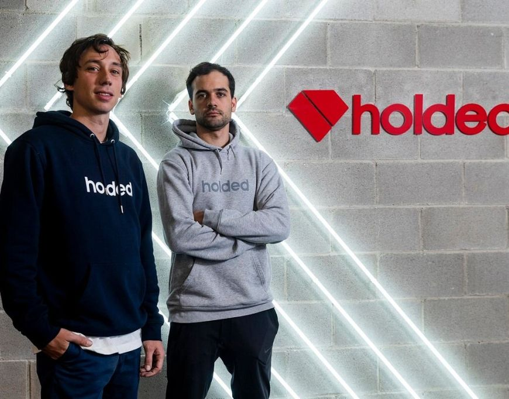
Cronologia
- 2016 · Fundació i llançament. Neix a Barcelona i aconsegueix 239.000 € de finançament inicial. El llançament formal és al setembre.
- 2018. Tanca una altra ronda de finançament d'1,3 milions d'euros i arriba als 10.000 usuaris.
- 2019 · Expansió. El fons internacional Lakestar lidera una nova ronda de 6 milions d'euros per millorar el producte i iniciar l'expansió europea.
- 2021. El gegant tecnològic noruec Visma adquireix Holded per una xifra d'uns 120-190 milions d'euros. Els fundadors continuen al capdavant de l'empresa.
- 2025. La companyia tanca l'exercici amb uns ingressos de 35,5 milions d'euros.
- 2026 · Aniversari i Intel·ligència Artificial. En el seu desè aniversari, la plataforma assoleix més de 900.000 usuaris. Llança una API v2 avançada per a desenvolupadors i integra intensament la IA (com el seu assistent Coney) per automatitzar fins al 95% de les tasques comptables.
2.2 Data de la primera versió i versió estable
La primera versió es va llançar oficialment el setembre de 2016. Com que és un programari basat en el núvol (SaaS), no existeix una data única de «versió estable»: el sistema s'actualitza de manera contínua. L'última gran reestructuració de la interfície i de les funcions es va desplegar el 25 de novembre de 2024.
2.3 Llenguatges de programació
- Backend (servidor): el nucli està escrit en PHP, amb frameworks com Laravel o Symfony, per gestionar la lògica de comptabilitat, facturació i base de dades.
- Frontend (interfície web): JavaScript / TypeScript.
- Aplicació mòbil: creada amb React Native.
- Bases de dades: sistemes com MongoDB i tecnologies de núvol de Google.
2.4 Plataformes compatibles
Holded és un SaaS: no requereix instal·lació i funciona de forma idèntica en qualsevol sistema operatiu (Windows, Ubuntu, macOS…) a través d'un navegador web amb connexió a Internet. També ofereix una aplicació per al mòbil.
2.5 Arquitectura del programari
- Model client-servidor: estructura 100% al núvol (SaaS). El client (navegador o app) només pinta la interfície, mentre que el servidor centralitzat processa les dades de manera segura.
- Frontend interactiu (Angular / frameworks SPA): funciona com una Single Page Application, cosa que permet una navegació fluida sense recarregar la pàgina, actualitzant les dades dinàmicament en format JSON.
- Comunicació via API REST: client i servidor es comuniquen amb peticions HTTP segures (GET, POST…). Aquesta mateixa API està oberta perquè botigues externes (Shopify, WooCommerce, etc.) es puguin connectar amb Holded.
- Backend en capes (3 nivells):
- Capa d'entrada: rep les peticions de l'API i controla la seguretat.
- Capa de negoci: el «cervell» que calcula impostos, factures i comptabilitat.
- Capa de dades: gestiona i emmagatzema la informació a les bases de dades.
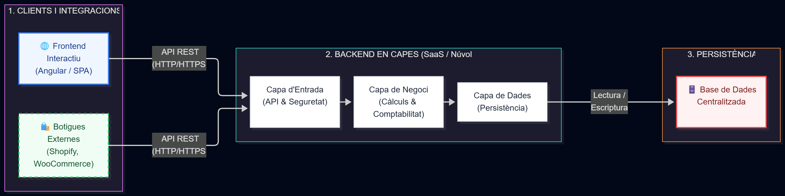
3. Tipus de llicència i preus
3.1 Tipus de llicència
Holded utilitza una llicència comercial i propietària sota un model de subscripció mensual o anual.
- Comercial: sí. S'ha de pagar de manera recurrent per utilitzar-lo. Ofereix cinc plans (Plus, Bàsic, Estàndard, Avançat i Premium) segons el volum de factures i usuaris.
- Propietària (no lliure): sí. El codi font és tancat i pertany a l'empresa; l'usuari només adquireix el dret d'ús de la plataforma al núvol, però no pot modificar-ne el codi ni distribuir-lo.
- Gratuïta: no. No té cap versió gratuïta permanent. L'única opció gratuïta és un període de prova de 14 dies.
3.2 Modalitats de distribució
Holded és un model SaaS basat en el núvol, amb accés mitjançant navegador web i aplicacions mòbils, i amb actualitzacions automàtiques. No permet la instal·lació en servidors propis (no hi ha On-Premise) i les dades es mantenen emmagatzemades de forma centralitzada.
3.3 Modalitats de subscripció i preus
Subscripció mensual (sense permanència) amb 14 dies de prova. Preus base sense IVA:
| Pla | Preu | Usuaris | Factures a l'any |
|---|---|---|---|
| Plus | 15 €/mes | 1 | fins a 250 |
| Bàsic | 29 €/mes | 2 | fins a 1.000 |
| Estàndard | 59 €/mes | 4 | fins a 3.000 |
| Avançat | 99 €/mes | 7 | fins a 10.000 |
| Premium | 199 €/mes | 15 | il·limitades |
Segons holded.com, hi ha un 50% de descompte els tres primers mesos, i el preu també depèn del tipus d'empresa.
Complements de pagament (extensions modulars)
- Operacions i logística: Inventari (25 €/mes), TPV per a botigues físiques (25 €/mes), Fabricació (25 €/mes) i Catàleg B2B (10 €/mes).
- Recursos humans: control horari i vacances (1,50 €/empleat/mes) i gestió de nòmines (5 €/empleat/mes).
- Finances i suport: usuaris addicionals (10 €/mes), enviament de l'IVA en temps real a l'AEAT amb el SII (des de 30 €/mes) i Suport Premium (50 €/mes).
- Integracions: connexió directa amb plataformes de comerç electrònic (Shopify, Amazon), passarel·les de pagament (Stripe, PayPal) i automatització (Zapier).
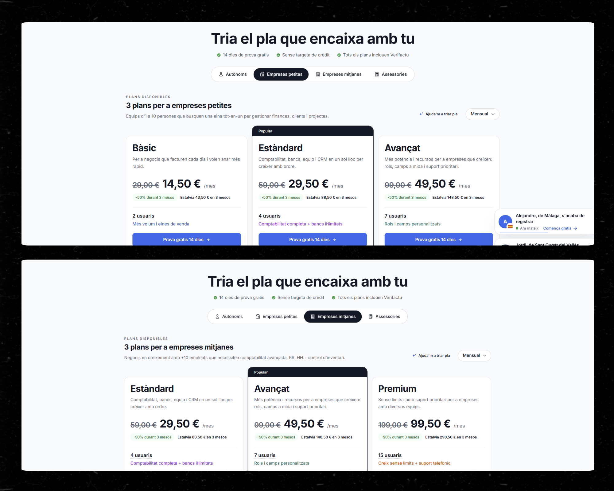
4. Sistemes gestors de bases de dades associats
Holded és un ERP SaaS i no exposa públicament cap sistema gestor de bases de dades (SGBD) visible per als usuaris: tota la infraestructura d'emmagatzematge està gestionada i oculta dins la seva arquitectura pròpia al núvol. Segons la informació consultada, s'utilitzen sistemes com MongoDB (base de dades documental, NoSQL) i tecnologies de núvol de Google.
Característiques de l'arquitectura de dades
- Programari 100% al núvol: no requereix servidors locals ni la gestió manual de cap base de dades per part de l'empresa o l'usuari.
- Accés via API: permet connectar botigues online o eines de tercers (Shopify, Stripe…) mitjançant la seva API REST, però l'SGBD subjacent roman sota el control exclusiu de l'equip tècnic de Holded.
- En crear un compte, el sistema genera una base de dades segura i aïllada per a cada empresa.
5. Instal·lació i accés al sistema
Holded és un ERP basat al 100% en el núvol, de manera que el procés de desplegament difereix dels programaris tradicionals: no requereix fitxers executables locals per a l'ordinador.
5.1 Tipus d'instal·ladors
Com que és un SaaS, no hi ha instal·ladors d'escriptori. Únicament es pot instal·lar l'aplicació oficial en dispositius mòbils, descarregant-la de l'App Store (iOS) o de la Google Play Store.
5.2 Procés de contractació
- Alta a la plataforma: l'usuari crea un compte al web del proveïdor.
- Activació de l'entorn: el sistema crea a l'instant un espai de treball al núvol i una base de dades segura i aïllada per a l'empresa.
- Contractació i subscripció: es tria un pla mensual o anual segons els mòduls necessaris (Facturació, Inventari, CRM, Projectes, RRHH). Sense permanència.
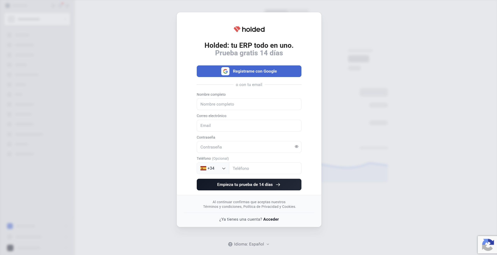
5.3 Modalitats d'accés
- Accés web (des de l'ordinador): és la forma principal d'utilitzar-lo. Només cal obrir el navegador (Chrome, Safari…).
- Accés app (mòbil o tauleta): pensada per a quan s'està fora de l'oficina: fitxar a la feina, mirar els comptes del banc o fer una foto a un tiquet per desar-lo automàticament.
- Accés client (programa per instal·lar): no existeix. Holded no té cap programa per descarregar a l'ordinador; tot funciona a través d'Internet.
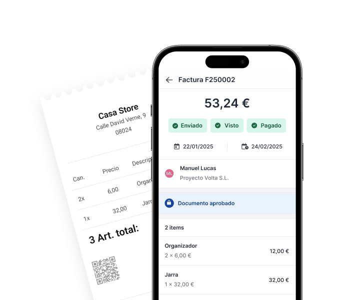
6. Mòduls i funcionalitats
Holded centralitza facturació, comptabilitat, CRM, inventari, projectes i recursos humans en una única plataforma. A diferència d'altres ERP, no cal contractar els mòduls per separat: els principals venen inclosos als plans, tot i que algunes funcionalitats extra es paguen com a complements. Els tres mòduls més importants són:
6.1 Facturació i vendes
És el nucli del sistema. Permet crear pressupostos, comandes, albarans i factures, gestionar cobraments i enviar documents als clients. També cobreix la facturació electrònica i l'adaptació a Verifactu. Les factures es poden automatitzar (recurrents) i queden vinculades a la comptabilitat i la tresoreria.
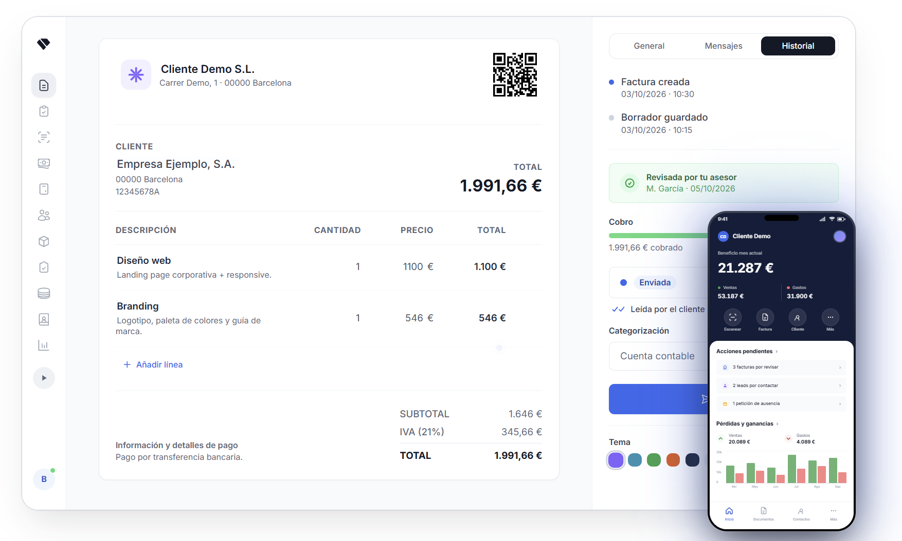
6.2 Comptabilitat i tresoreria
Les factures i les despeses generen els assentaments comptables de forma automàtica. Inclou conciliació bancària, control del cash flow, impostos (models fiscals, Impost de Societats, SII als plans que ho inclouen) i informes financers. Tots els plans donen accés a l'assessoria o gestoria partner, que treballa sobre les mateixes dades en temps real.
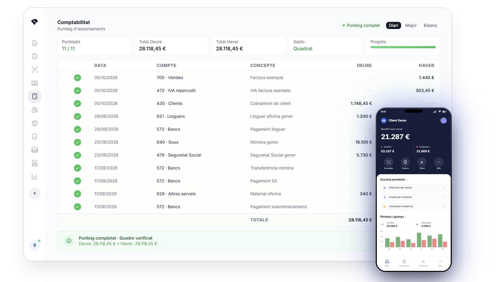
6.3 CRM i projectes (i inventari)
El CRM gestiona contactes, oportunitats i l'embut de vendes (pipeline), i es connecta amb pressupostos i factures. El mòdul de projectes permet fer seguiment de tasques, hores i rendibilitat per projecte. A més, hi ha el mòdul d'inventari (complement de pagament) per controlar estoc, magatzems i compres, i un TPV per a botigues.
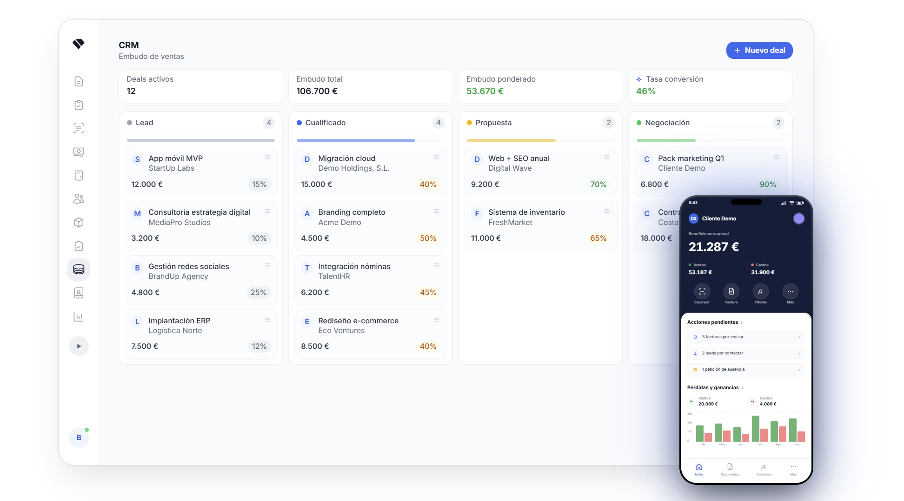
6.4 Capacitat de crear nous mòduls
Holded és un programari propietari i tancat: no es poden crear mòduls nous dins del sistema, com passa a Odoo. Tot i això, es pot ampliar i integrar mitjançant la seva API:
- API REST: utilitza codis de resposta HTTP i retorna les dades en format JSON. Documentació a developers.holded.com; URL base:
https://api.holded.com. - Autenticació: es genera una API Key a Configuració > Desenvolupadors i s'envia a la capçalera de cada petició. Les versions més noves parlen d'un API Token amb permisos configurables a Desenvolupadors > Credencials.
- Integracions: Shopify, Amazon, Stripe, PayPal, Zapier, etc. (més de 13 integracions natives), a més de webhooks.
- Llenguatges: en ser una API REST/JSON, serveix qualsevol llenguatge que faci peticions HTTP: Python, JavaScript/Node.js, PHP, Java, C#, etc.
- Eines i IDE: Visual Studio Code, PyCharm, IntelliJ, Postman o Insomnia per provar els endpoints, i Zapier o Make per a integracions sense codi.
Exemple de codi (JavaScript)
// Petició a l'API de Holded amb la API Key a la capçalera
fetch("https://api.holded.com/api/invoicing/v1/documents/invoice", {
method: "GET",
headers: { "key": "LA_TEVA_API_KEY" }
})
.then(resposta => resposta.json())
.then(factures => console.log(factures));
7. Comparativa amb els principals competidors
Hem comparat Holded amb dos competidors: Odoo i SAP Business One.
| Holded | Odoo | SAP Business One | |
|---|---|---|---|
| Llicència | Propietària, SaaS | Community (lliure) i Enterprise (comercial) | Comercial |
| Distribució | Només núvol | Núvol, On-Premise, Odoo.sh | Núvol o On-Premise |
| Preu | De 15 a 199 €/mes segons el pla, sense IVA | Community gratuït; Enterprise per usuari/mes | A mida, sota pressupost |
| Mòduls | Tots integrats als plans | Centenars d'aplicacions i mòduls | Molt complet (fabricació, logística) |
| Llenguatges | API REST, qualsevol llenguatge | Python, XML, JavaScript | SDK .NET / DI API, SQL |
| Millor per a | Autònoms i pimes | Pimes amb necessitats a mida | Pimes grans amb processos complexos |
| Personalització | Limitada (API) | Molt alta | Alta, amb consultoria |
Holded destaca per la facilitat d'ús i l'adaptació a la normativa espanyola, i queda per sota en personalització. Els preus d'Odoo i SAP depenen de la configuració.
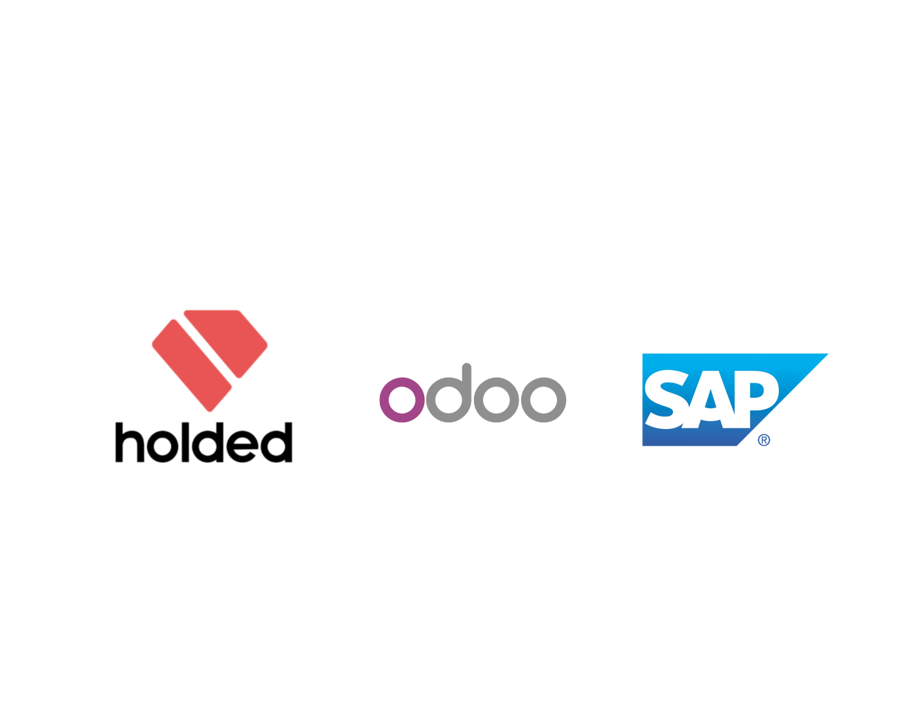
8. Ofertes de feina que demanen coneixements de Holded
Hi ha dos tipus d'ofertes: les que demanen saber utilitzar Holded (administració, comptabilitat) i les de treballar per a Holded o per a partners seus.
| Portal | Oferta | Requisits | Enllaç |
|---|---|---|---|
| InfoJobs (tipus 1) | Contable HOLDED a temps parcial | CFGS; +5 anys d'experiència; domini avançat de Holded (imprescindible); comptabilitat general, conciliacions i tancaments | Oferta 1 |
| InfoJobs (tipus 1) | Administrative & Operations Assistant (Silbat Energy Storage Solutions), Madrid, presencial, jornada completa | CFGS; mínim 2 anys d'experiència; anglès avançat; ofimàtica i bases de dades (es valora Holded i Revolut People) | Oferta 2 |
| Indeed (tipus 2) | Product Data Analyst (Holded), Barcelona, híbrid, jornada completa, contracte indefinit | Grau en Informàtica o similar (o màster en Data Science); 1-3 anys en dades/analítica; bon SQL; modelatge de dades; castellà (nivell de treball) i anglès intermedi; viure a Barcelona; es valora dbt, BigQuery, Lightdash i Python | Oferta 3 |
| Indeed (tipus 2) | Accounting Support Specialist (Phone) (Holded), Barcelona, híbrid, jornada completa, contracte indefinit | 1+ any en call center o atenció al client; comunicació escrita excel·lent; coneixements bàsics de finances; castellà natiu i anglès fluid; es valora experiència en SaaS i eines com Intercom, Zendesk o Aircall | Oferta 4 |
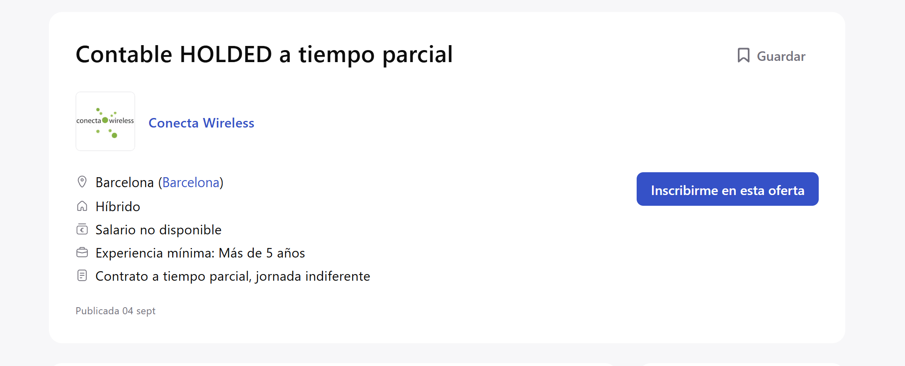
9. Avantatges i inconvenients
| Punts forts | Punts dèbils |
|---|---|
| Interfície intuïtiva i fàcil d'aprendre | Personalització limitada (programari tancat) |
| 100% al núvol, sense instal·lar res | Només SaaS, no es pot instal·lar al propi servidor |
| Tots els mòduls integrats en una sola plataforma | Funcions com inventari, TPV i nòmines es paguen a part |
| Adaptat a la normativa espanyola (Verifactu, SII) | No té pla gratuït permanent, només prova de 14 dies |
| API REST oberta i integracions amb Shopify, Stripe, Zapier, etc. | Pot quedar-se curt per a empreses grans o processos de fabricació complexos |
| Accés per a l'assessoria/gestoria sense cost addicional | El preu creix amb usuaris addicionals (10 € per usuari extra) |
| Escala des d'autònoms fins a pimes | Menys funcionalitat en comptabilitat avançada que programes especialitzats |
10. Bibliografia i fonts
- Visma - adquisició de Holded
- El Nacional - Holded, de 0 a 190 milions en cinc anys
- Forbes - Cómo Javi Fondevila y Bernat Ripoll fundaron Holded
- Visma - Meet the entrepreneurs behind Holded
- Holded - Cloud ERP
- Jobfluent - Holded
- Holded - Termes i condicions
- Prodegest - Holded: qué es y cómo funciona
- Holded - Precios
- Holded - ERP for SMEs
- Holded - ERP
- Holded - Blog: software de gestión empresarial
- Holded - Directorio de partners
- Holded Developers - API Key
- Holded Help - How to generate and use the Holded API
- Holded Academy - How to use Holded's API
- TechCrunch (1)
- TechCrunch (2)
- Dealroom - Holded
- Aikount - Holded precios
- G2 - Holded pricing
- Ofertes de feina: enllaços de la secció 8 (InfoJobs i Indeed).